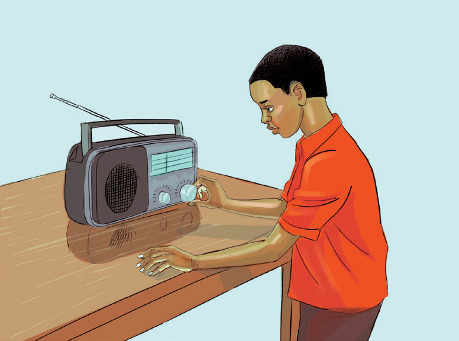
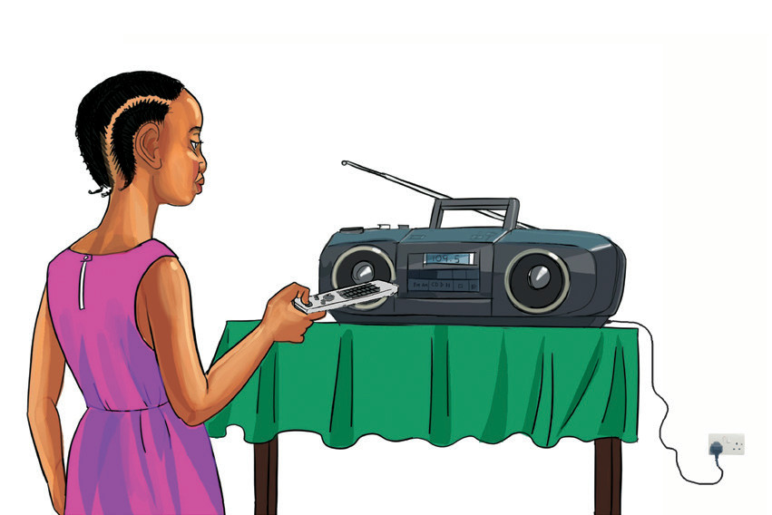

6. Baada ya kusikiliza, zima redio kwa kubonyeza rimoti au kuzungusha kitufe cha kuzimia.
7. Zima swichi ya soketi ukutani kama unatumia umeme.
Chunguza Kielelezo namba 6 (a) na (b), kisha fanya Zoezi la 2.
a

b

Kielelezo namba 6: Kutumia redio